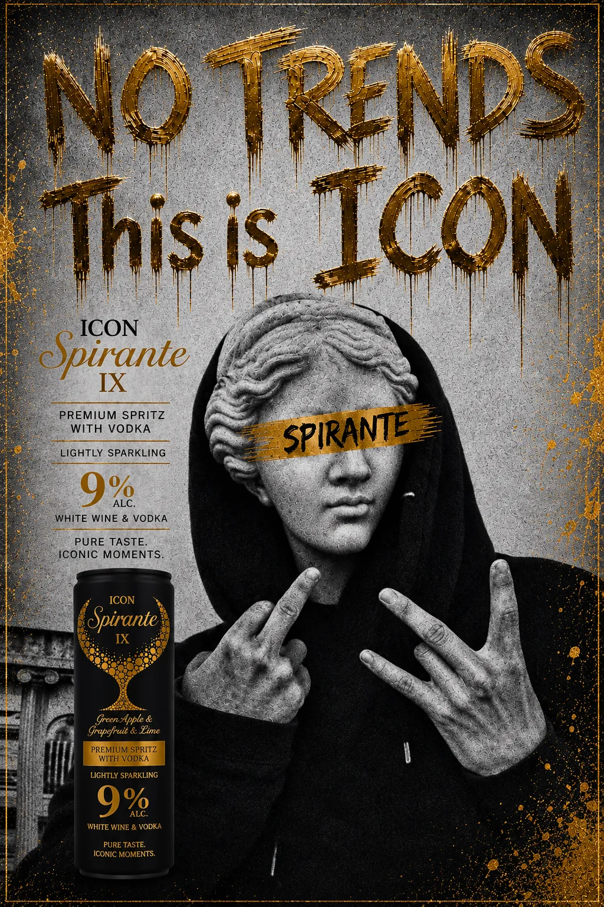
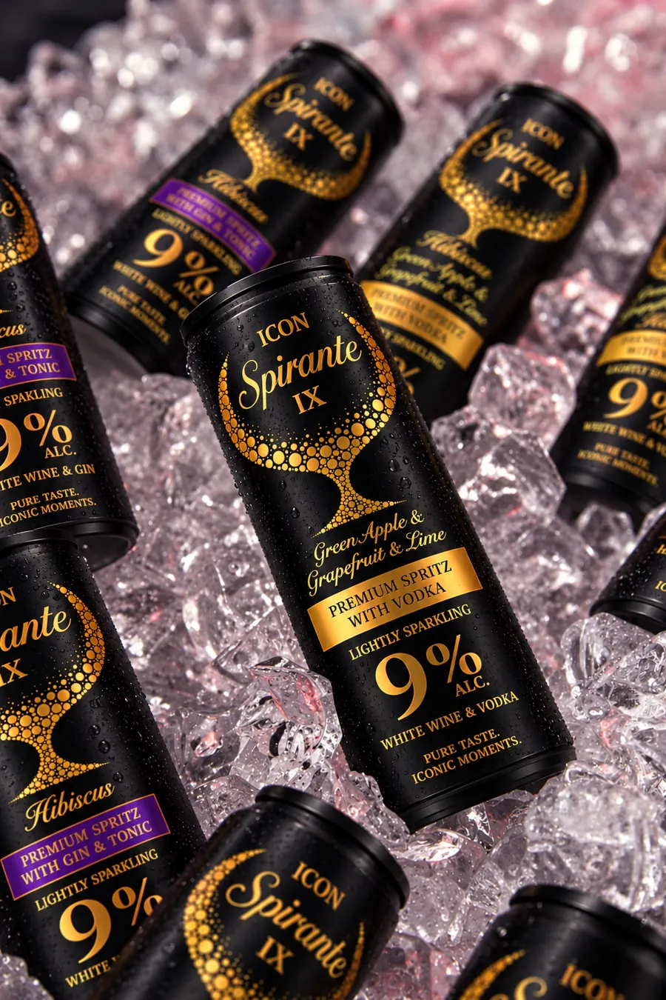
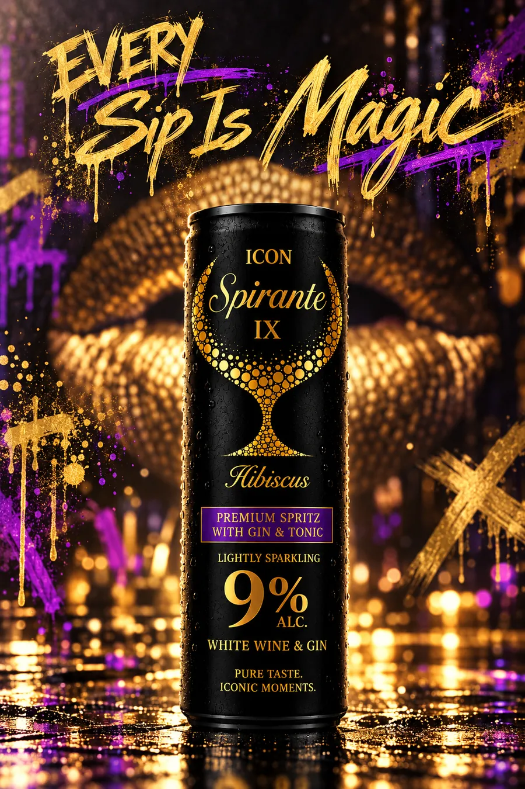
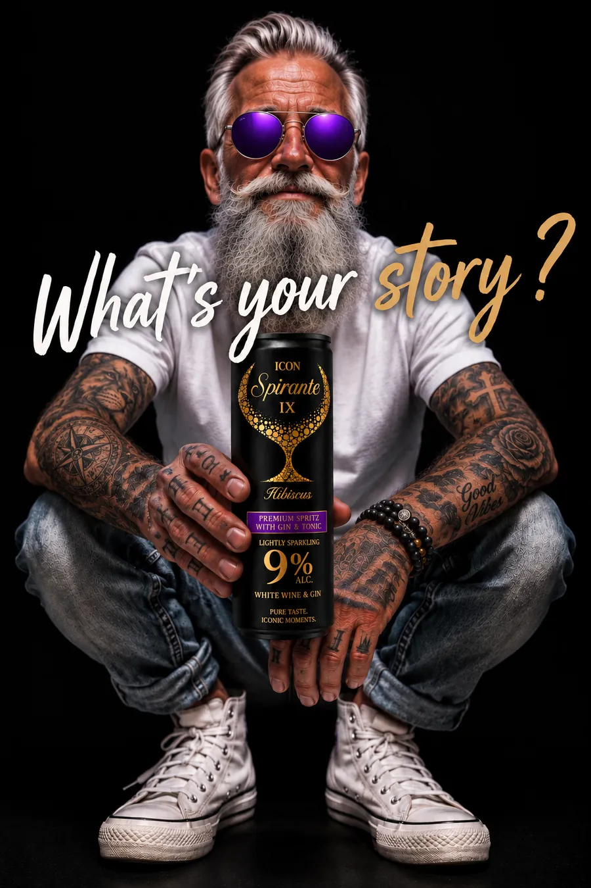
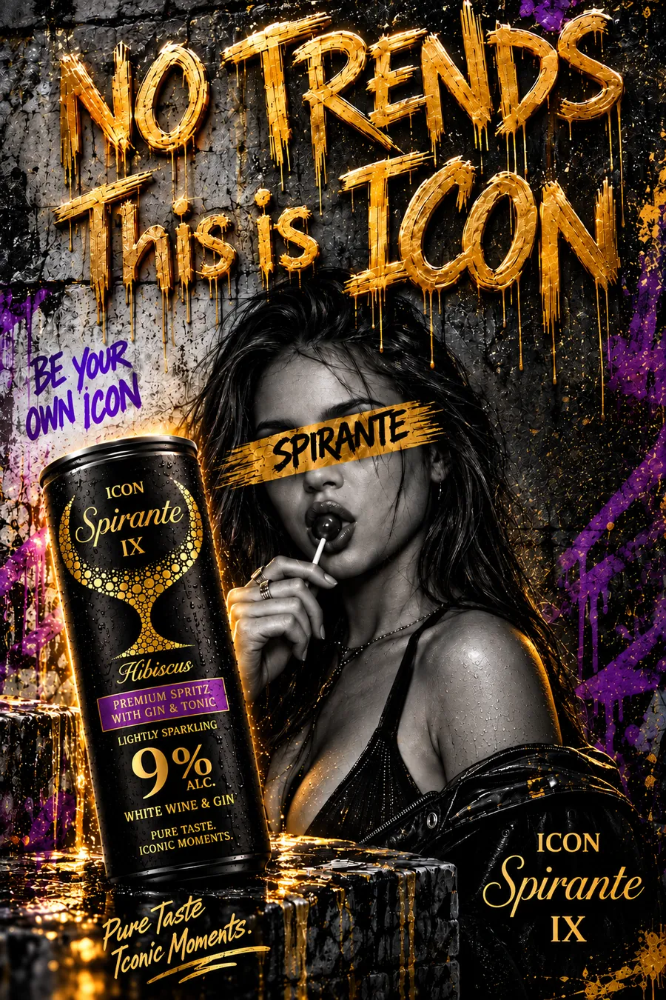
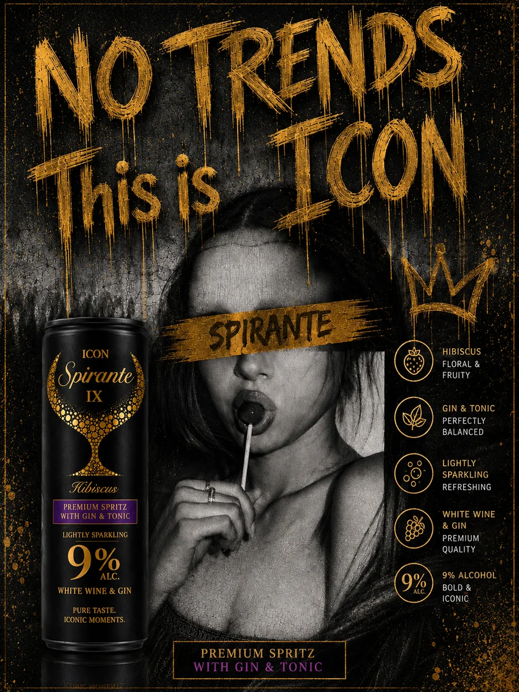
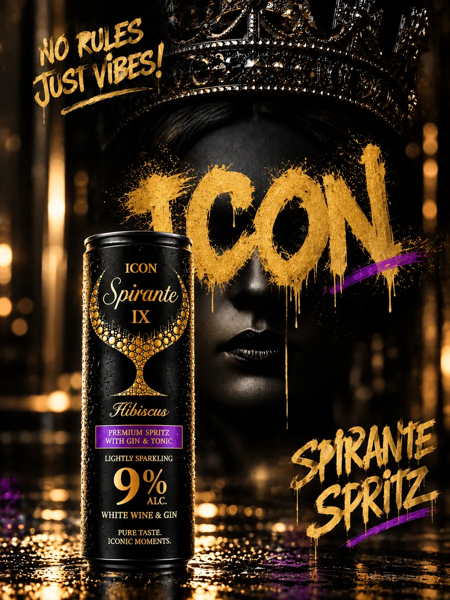
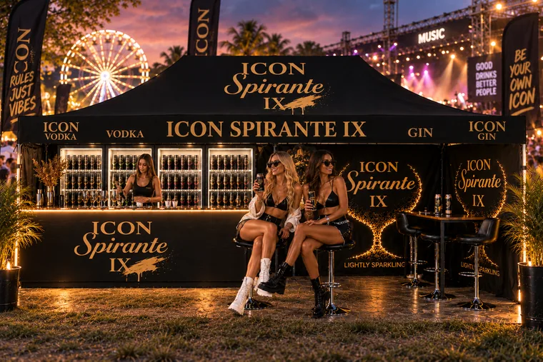
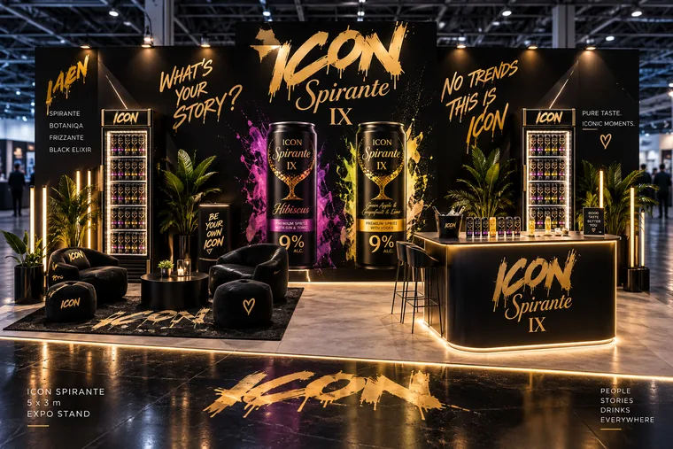
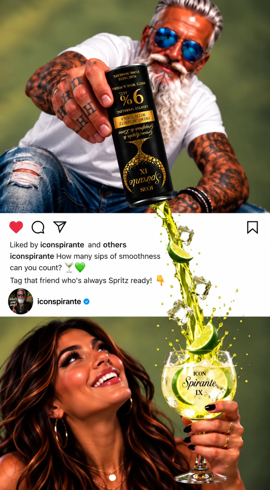

Az ICON Spirante IX rólad szól
ICON · Brand filozófiája
Az ICON nem egyszerűen egy ital. Ez egy állapot

- A pillanat érték
- A stílus karakterből születik
- A prémium minőség hozzáállás kérdése
- Az élmény közösséget teremt
- A saját történeted a legfontosabb
ICON · Brand
Minden korty egy emlékeztető
-
Egy korty szabadság
Green Apple & Grapefruit & Lime · vodka · 9% · 250 ml

-
Egy korty inspiráció
Hibiscus · gin & tonic · 9% · 250 ml

-
Egy korty történet
Lightly sparkling · white wine spritz

A minőség nem luxus, hanem alapelv




Ízvilág
Egy ízvilág, amely nem csak finom, hanem karakteres
- MegjelenéseIkonikus
- ÍzvilágaKifinomult
- KaraktereEgyértelmű
ICON · Brand és ami mögötte rejlik
Az ICON azért született, hogy emlékeztessen valamire, amit sokan elfelejtettek

Nem azért születtünk,hogy beleolvadjunka tömegbe

Az ICON a minőségés az önazonosságtalálkozása
Megjelenéseink
Fesztivál · Expo


Hírek
Hamarosan
Botaniqa Spritz érkezik
- Lime & Cactus
- Pineapple & Coconut
- Citrus-Lime 0,00%
- Cherry 0,00%
Jelenleg
Új hírrel hamarosan jelentkezünk
Elsőként a közösségi oldalainkon szólunk
Kövess minket
Kövess minket a közösségi médiában is
Követsz minket?
